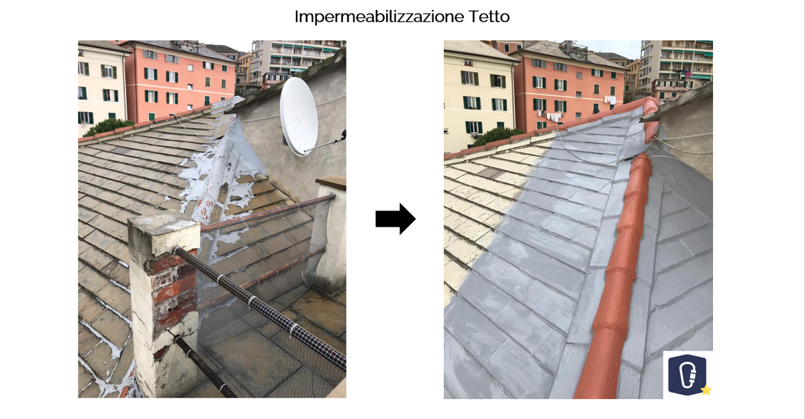
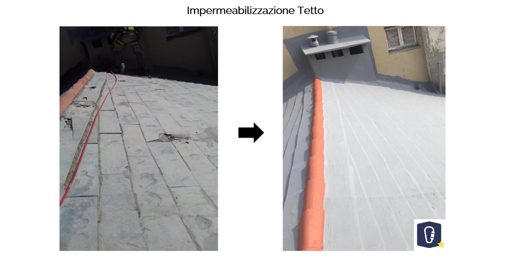

Pulizia del canale di gronda;
Controllo e sistemazione del canale di gronda, con taglio delle bolle d'acqua nei punti segnalati;
Rimozione delle parti staccate e controllo della guaina sottostante (se integra);
Fornitura e posa degli strati precedentemente rimossi, eseguiti a fiamma;
Sfiammatura di tutta la parte del canale di gronda segnalata per ravvivare la guaina esistente;
Applicazione di due mani di un prodotto di altissima qualità, al fine di impermeabilizzare tutti i tipi di guaina bituminosa garantendo la massima tenuta.

Picchettatura degli intonaci immalorati o in fase di distacco, in corrispondenza delle infiltrazioni, eseguito con l'ausilio di attrezzature meccaniche e a mano;
Calo a terra del materiale di risulta e trasporto alla PPDD;
Trattamento della porzione della facciata precedentemente picchettata e sigillatura degli stessi con materiale impermeabilizzante;
Applicazione a pennello di una boiacca formata da cemento premiscelato, tipo Mapegrout della MAPEI;
Ripristino di tutte le parti precedentemente demolite con malta tissotropica fibrorinforzata della MAPEI a ritiro controllato a seconda dei casi e degli spessori per riempimento;
Impermeabilizzazione con applicazione di due mani di rasante tipo Capatec della Kaparol; tra le due mani è stata posta la rete;
Coloritura (due mani) rispettando il colore pre esistente.

Pulizia e spazzolatura di tutte e due le falde del tetto al fine di eliminare ogni traccia di sporcizia e preparare la base al trattamento;
Ripresa e stuccatura delle lastre rotte e staccate con mata di resina fibrorinforzata della MAPEI;
Fornitura e posa in opera di tre mani di Betonguaina liquida, manto liquido sintetico bi-componente (molto elastico e impermeabile);
Tra le prime due mani di manto impermeable è stato inserito uno strato di tessuto non tessuto atto a rendere la superficie trattata resistente, rispettando la forma originale delle ardesie.

Controllo tegole nelle zone interessate del tetto;
Ripristino delle tegole rotte o distaccate;
Smaltimento del materiale di risulta;
Ripristino della colonna in stato di degrado, con prodotti fibro rinforzati della MAPEI;
Impermeabilizzazione della colonna utilizzando un rasante minerale KSM 190 della CAPAROL, con finitura mediante l'ausilio di un frattazzino a spugna pronto per la tinteggiatura;
Chiusura del buco alla base del colmo utilizzando prodotti fibrorinforzati (MAPEI);
Impermeabilizzazione con prodotto specifico utilizzando tre mani di guaina liquida. Tra le prime due mani di guaina è stato inserito uno strato di tessuto non tessuto per imperidre le infiltrazioni.

Preparazione dell'ancoraggio;
Sostituzione pluviale mediante l'utilizzo di tecniche alpinistiche;
Smaltimento del materiale di risulta alla PPDD.